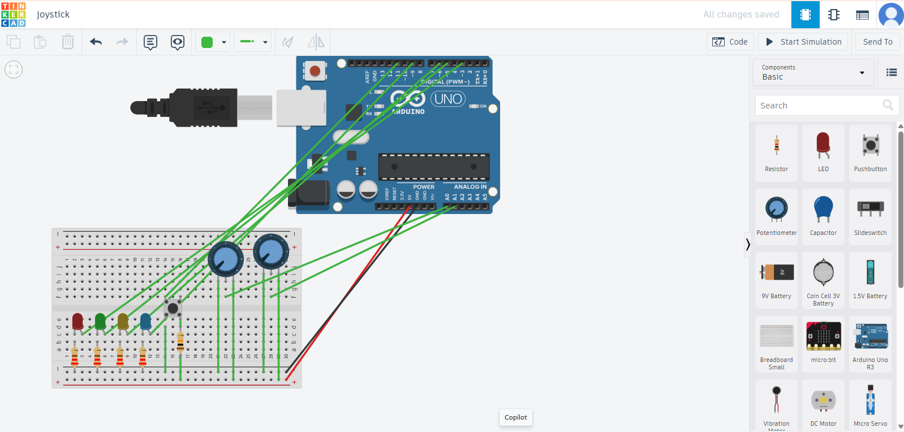

Module 5
Sensors and Actuators
Definition
A sensor monitors environmental conditions such as fluid levels, temperatures, vibrations, or voltage. When these environmental conditions change, they send an electrical signal to the sensor, which can then send the data or an alert back to a centralized computer system or adjust the functioning of a particular piece of equipment. An actuator , on the other hand, causes movement. It takes an electrical signal and combines it with an energy source to create physical motion. An actuator may be pneumatic, hydraulic, electric, thermal, or magnetic.
TinkerCad Simulation
Tinkercad is a free, web-based application developed by Autodesk that allows users to create and simulate 3D designs, electronic circuits, and code using a simple, user-friendly interface.
1. Using External LED's.

2. Using a Potentiometer

3. Mills Function

4. Joystick Simulation
Using two Potentiometers and one button to simulate a joystick
Simulated physically as shown
Summary
It was a very productive week.